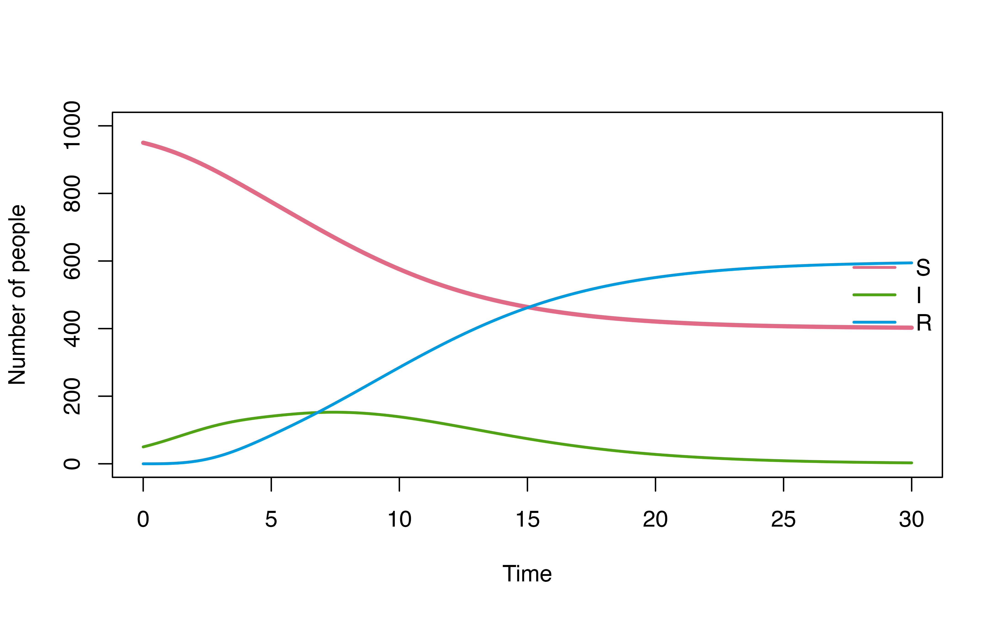
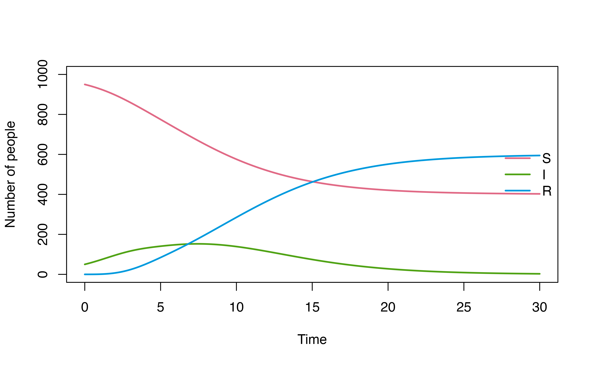
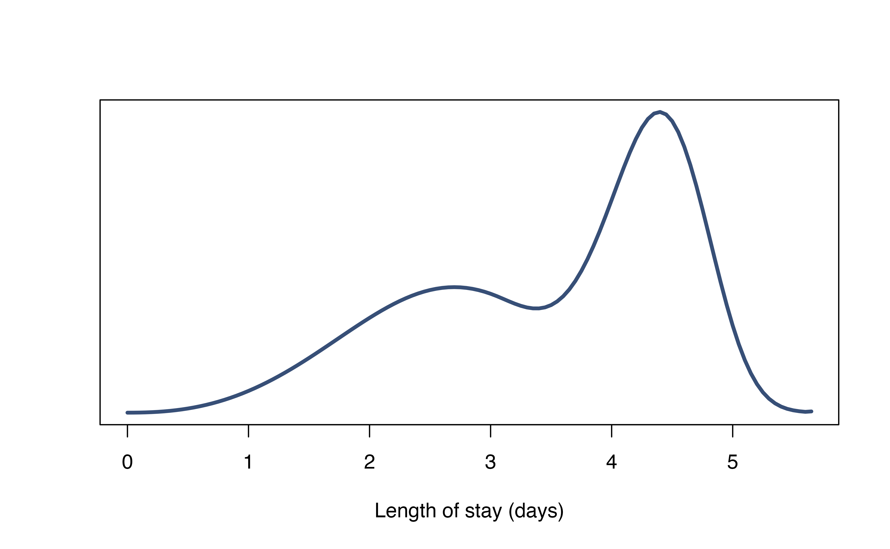

Non-parametric vs parametric
In denim, the users have 2 options to define dwell-time distribution:
As a parametric distribution: using
d_*()functions.As a non-parametric distribution: using
nonparametric()function and the user must provide the histogram of distribution where bin-width matches time step.
Example 1
To demonstrate the difference between 2 approaches, we can try
modeling an SIR model with Weibull distributed infectious period using
nonparametric() and d_weibull().
Model definition using
d_weibull()
sir_parametric <- denim_dsl({
S -> I = beta * (I/N) * S
I -> R = d_weibull(scale = r_scale, shape = r_shape)
})Model parameters that must be defined are: beta,
N, r_scale, r_shape
Model definition using
nonparametric()
sir_nonparametric <- denim_dsl({
S -> I = beta * (I/N) * S
I -> R = nonparametric(dwelltime_dist)
})Model parameters that must be defined are: beta,
N, dwelltime_dist (the discrete dwell time
distribution)
Run model
We will run both models under the following model settings
# parameters
mod_params <- list(
beta = 0.4,
N = 1000,
r_scale = 4,
r_shape = 3
)
# initial population
init_vals <- c(S = 950, I = 50, R = 0)
# simulation duration and timestep
sim_duration <- 30
timestep <- 0.05Running the model with d_weibull() is straight
forward
parametric_mod <- sim(sir_parametric,
initialValues = init_vals,
parameters = mod_params,
simulationDuration = sim_duration,
timeStep = timestep)
plot(parametric_mod, ylim = c(0, 1000))
However, to run the model using nonparametric(), we
first need to compute the discrete dwell time distribution
(dwelltime_dist).
Since all parametric distributions are asymptotic to 1, we will set
the maximal dwell time as the time point where the cumulative
probability is sufficiently close to 1 (i.e. above the threshold
1 - error_tolerance).
A helper function to compute discrete dwell time distribution from a distribution function in R is provided below.
Helper function
# Compute discrete distribution of dwell-tinme
# dist_func - R distribution function for dwell time (pexp, pgamma, etc.)
# ... - parameters for dist_func
compute_dist <- function(dist_func,..., timestep=0.05, error_tolerance=0.0001){
maxtime <- timestep
prev_prob <- 0
prob_dist <- numeric()
while(TRUE){
# get current cumulative prob and check whether it is sufficiently close to 1
temp_prob <- ifelse(
dist_func(maxtime, ...) < (1 - error_tolerance),
dist_func(maxtime, ...),
1);
# get f(t)
curr_prob <- temp_prob - prev_prob
prob_dist <- c(prob_dist, curr_prob)
prev_prob <- temp_prob
maxtime <- maxtime + timestep
if(temp_prob == 1){
break
}
}
prob_dist
}We can then run the model as followed
# Compute the discrete distribution
dwelltime_dist <- compute_dist(pweibull,
scale = mod_params$r_scale, shape = mod_params$r_shape,
timestep = timestep)
# Compute the discrete distribution
nonparametric_mod <- sim(sir_nonparametric,
initialValues = init_vals,
parameters = list(
beta = mod_params$beta,
N = mod_params$N,
dwelltime_dist = dwelltime_dist
),
simulationDuration = sim_duration,
timeStep = timestep)
plot(nonparametric_mod, ylim = c(0, 1000))
Example 2
By using nonparametric(), we can run the model with any
dwell time distribution shape
Consider the following multimodal distribution.
timestep <- 0.05
plot(seq(0, by = 0.05, length.out = length(multimodal_dist)),
multimodal_dist,
type = "l", col = "#374F77", lty = 1, lwd = 3,
xlab = "Length of stay (days)", ylab = "", yaxt = 'n')
We can also run the sir_nonparametric model from last
example with this dwell time distribution
# model parameter
parameters <- list(beta = 0.4, N = 1000,
dwelltime_dist = multimodal_dist)
# initial population
init_vals <- c(S = 950, I = 50, R = 0)
# simulation duration and timestep
sim_duration <- 30
timestep <- 0.05
# Run the model with multimodel distribution
nonparametric_mod <- sim(
sir_nonparametric,
initialValues = init_vals,
parameters = parameters,
simulationDuration = sim_duration,
timeStep = timestep)
plot(nonparametric_mod, ylim = c(0, 1000))